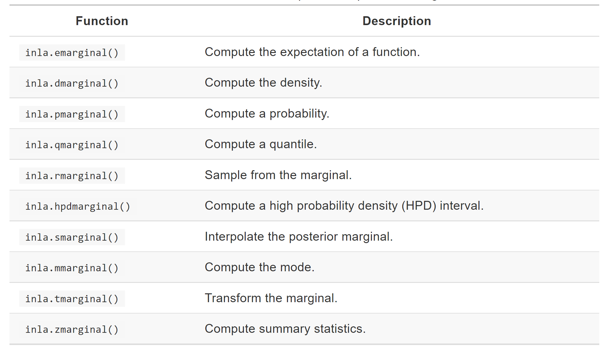
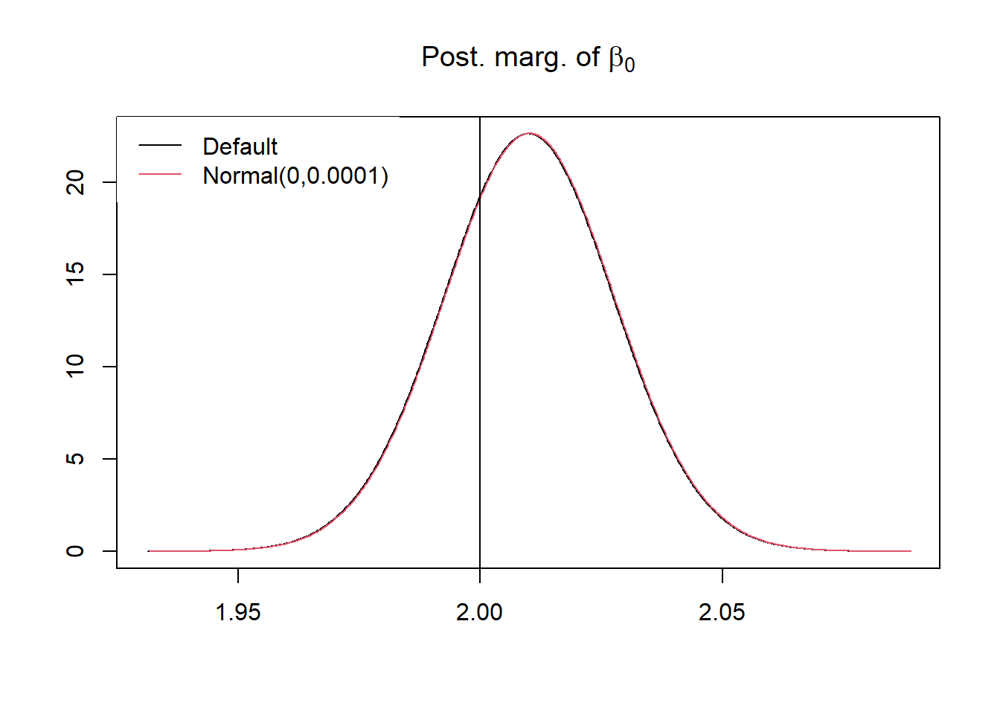

set.seed(1234) #set the seed
n = 100
sigma = 0.1
beta.0 = 2
beta.1 = 0.5
x = runif(n)
eta = beta.0 + beta.1*x
y = rnorm(n,eta,sigma)
#plot(x,y) #plot the data
my.data = data.frame(y=y,x=x)Practical 1 - INLA basics
In this practical we will use simulated data to get familiar with the basic R-INLA functions.
First, we will familiarize with the manipulation of the posterior marginal distributions exploiting these for inference. R-INLA provides a number of functions to make computations on the posterior marginals. These are summarized in the book “Bayesian inference with INLA” that is freely available at the link https://becarioprecario.bitbucket.io/inla-gitbook/index.html (see section 2.6; a summary table is reported also below). Then, we will learn how to change the prior distributions.
Summary of functions to manipulate marginal distribution in the INLA package

1. Data simulation
The data are simulated from the following model:
\[ y_i\sim Normal(\eta_i, \sigma=0.1) \qquad i=1,\ldots,n=100 \]
with \(\eta_i = \beta_0+ \beta_1 x_i\) where \(\beta_0=2\), \(\beta_1=0.5\) and the values of the covariate \(\boldsymbol{x}\) are generated from an Uniform(0,1) distribution. The simulated response and covariate data are then saved in a data.frame object.
- To simulate the data, we can use the following code:
2. Model estimation and output exploration
We use R-INLA to estimate the parameters of the given model, where \(\boldsymbol \theta=\{\beta_0,\beta_1\}\) and \(\boldsymbol\psi=\{1/\sigma^2\}\). In particular:
- we load the
R-INLAlibrary and define theformula, which includes only fixed effects.
library(INLA)
formula = y ~ 1 + x- we call the
inlafunction for estimation
output = inla(formula, family="gaussian", data=my.data)- we explore the output using the standard and options applied to the object named :
#plot(output)
summary(output)Time used:
Pre = 0.293, Running = 0.14, Post = 6.65, Total = 7.08
Fixed effects:
mean sd 0.025quant 0.5quant 0.975quant mode kld
(Intercept) 2.010 0.018 1.975 2.010 2.045 2.010 0
x 0.496 0.034 0.428 0.496 0.563 0.496 0
Model hyperparameters:
mean sd 0.025quant 0.5quant
Precision for the Gaussian observations 111.79 15.81 83.00 111.05
0.975quant mode
Precision for the Gaussian observations 144.86 109.56
Marginal log-Likelihood: 77.14
is computed
Posterior summaries for the linear predictor and the fitted values are computed
(Posterior marginals needs also 'control.compute=list(return.marginals.predictor=TRUE)')- If we are interested in extracting the marginal posterior distribution of \(\beta_0\) and \(\beta_1\) we use the following code:
names(output$marginals.fixed) #check the fixed effect names[1] "(Intercept)" "x" class(output$marginals.fixed) #NOTE: it is a list[1] "list"post.beta0 = output$marginals.fixed[[1]]
post.beta1 = output$marginals.fixed$xThe plot of the marginal posterior distribution can be obtained using the inla.smarginal function as shown below; moreover, we include in the plot a polygon representing the 95% highest posterior density (hpd) interval:
### beta1
plot(inla.smarginal(post.beta1),type="l",xlab="",ylab="",
main=expression(paste("Post. marg. of ", beta[1])))
hpd.beta1 = inla.hpdmarginal(p=0.95,post.beta1)
# Prepare everything for the hpd polygon
xvalues = seq(hpd.beta1[1], hpd.beta1[2], length.out = 256)
yvalues = inla.dmarginal(xvalues,post.beta1)
xvalues = c(hpd.beta1[1],xvalues,hpd.beta1[2])
yvalues = c(0,yvalues,0)
polygon(xvalues, yvalues, col = "slateblue1", border = 1)### Intercept
plot(inla.smarginal(post.beta0),type="l",xlab="",ylab="",
main=expression(paste("Post. marg. of ", beta[0])))
hpd.beta0 = inla.hpdmarginal(p=0.95,post.beta0)
# Prepare everything for the hpd polygon
xvalues = seq(hpd.beta0[1], hpd.beta0[2], length.out = 256)
yvalues = inla.dmarginal(xvalues,post.beta0)
xvalues = c(hpd.beta0[1],xvalues,hpd.beta0[2])
yvalues = c(0,yvalues,0)
polygon(xvalues, yvalues,
col = "slateblue1", border = 1)- Now we want to plot the marginal posterior distribution of the measurement error standard deviation \(\sigma\) starting from the marginal posterior distribution of the precision for the Gaussian observations. The transformation is done through the
inla.tmarginalfunction as follows:
names(output$marginals.hyperpar) #check the hyperparameter name[1] "Precision for the Gaussian observations"post.sigma = inla.tmarginal(function(x) sqrt(1/x),
output$marginals.hyperpar[[1]])
# We use [[1]] instead of the long name
plot(inla.smarginal(post.sigma),type="l",xlab="",
ylab="",main=expression(paste("Post. marg. of ", sigma)))
hpd.sigma = inla.hpdmarginal(p=0.95,post.sigma)
# Prepare everything for the hpd polygon
xvalues = seq(hpd.sigma[1], hpd.sigma[2], length.out = 256)
yvalues = inla.dmarginal(xvalues,post.sigma)
xvalues = c(hpd.sigma[1],xvalues,hpd.sigma[2])
yvalues = c(0,yvalues,0)
polygon(xvalues, yvalues, col = "slateblue1", border = 1)Finally we can obtain some summary statistics about the distribution using the inla.zmarginal function:
inla.zmarginal(post.sigma)Mean 0.0952858
Stdev 0.00676302
Quantile 0.025 0.0831209
Quantile 0.25 0.0905235
Quantile 0.5 0.0948813
Quantile 0.75 0.0995996
Quantile 0.975 0.109676 3. Change the priors
3.1 Fixed effects
The default prior adopted by R-INLA for the regression parameters \(\beta_0\) and \(\beta_1\) are vague distributions. In details, the intercept of the model is assigned a Gaussian prior with mean and precision equal to 0. The rest of the fixed effects are assigned Gaussian priors with mean equal to 0 and precision equal to 0.001. The option control.fixed of the inla function can be used for changing these priors. For example if we want to specify \(\beta_0\sim\text{Normal}(0,10^4)\) and \(\beta_1\sim\text{Normal}(0,1)\) we will use the following code:
output2 = inla(formula, family="gaussian", data=my.data,
control.fixed=list(mean=0,prec=1,
mean.intercept=0,prec.intercept=0.0001))where mean and prec represent the mean and precision of the regression parameters (excluding the intercept, whose parameters can be accessed through mean.intercept and prec.intercept).
Note that when the model includes more than one fixed effect, a `list` has to be specified. For example `control.fixed=list(mean=list(a=1, b=2, default=0))` assigns prior mean equal to 1 for fixed effect `a` and equal to 2 for `b`; all the other fixed effects has a zero prior mean. The same holds for the precision `prec`.
The new marginal posteriors for \(\beta_0\) and \(\beta_1\) are compared with the old ones computed before:
plot(inla.smarginal(post.beta0),type="l",xlab="",ylab="",
main=expression(paste("Post. marg. of ", beta[0])))
lines(inla.smarginal(output2$marginals.fixed[[1]]),col=2)
abline(v=beta.0)
legend("topleft",col=c(1,2),lty=c(1,1),
legend=c("Default","Normal(0,0.0001)"),box.lty=0)
plot(inla.smarginal(post.beta1),type="l",xlab="",ylab="",
main=expression(paste("Post. marg. of ", beta[1])))
lines(inla.smarginal(output2$marginals.fixed$x),col=2)
abline(v=beta.1)
legend("topleft",col=c(1,2),lty=c(1,1),
legend=c("Default","Normal(0,1)"),box.lty=0)We do not detect any difference in the posterior distributions.
3.2 Outcome precision \((1/\sigma^2)\)
The default prior adopted by R-INLA for the response precision \(\tau=1/\sigma^2\) is a noninformative logGamma prior defined on the logarithm of the precision (internal scale). The default prior distribution is \(log(\tau)=\log(1/\sigma^2)\sim \text{logGamma}(1,5e-05)\) This is equivalent to assume a Gamma prior on the precision, i.e. \(\tau\sim \text{Gamma}(1, 0.00005)\) (see Section 5.1 and 5.1.2 of the INLA book ‘Spatial and Spatio-Temporal Bayesian Models with R-INLA’).
It is possible to change this prior using the control.family option of the inla function. For example if we want to specify a standard Normal(0,1) prior on the logarithm of the precision we will type:
output3 = inla(formula, family="gaussian", data=my.data,
control.family=list(hyper=list(
prec=list(prior="gaussian",param=c(0,1))))
)Instead if we want to assume for \(\tau\) a Gamma-prior with parameters (1, 0.01) we will type:
output4 = inla(formula, family="gaussian", data=my.data,
control.family=list(hyper=list(
prec=list(prior="loggamma",param=c(1,0.01))))
)The default and two alternative posterior distributions are compared below:
post.sigma3 = inla.tmarginal(function(x) sqrt(1/x),
output3$marginals.hyperpar[[1]])
post.sigma4 = inla.tmarginal(function(x) sqrt(1/x),
output4$marginals.hyperpar[[1]])
plot(inla.smarginal(post.sigma),type="l",xlab="",
ylab="",main=expression(paste("Post. marg. of ", sigma)))
lines(inla.smarginal(post.sigma3),col=2)
lines(inla.smarginal(post.sigma4),col=3)
abline(v=sigma)
legend("topright",col=c(1,2,3),lty=c(1,1,1),
legend=c("Default","Normal(0,1)","logGamma(1,0.01)"),box.lty=0)